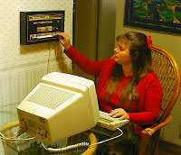
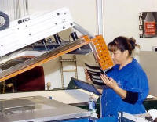
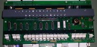
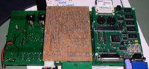
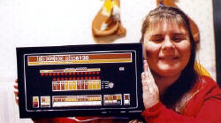

SBC6120 Front Panel
SBC6120 Front Panel


|
|
|
The FP6120 is designed as a peripheral device which plugs into the standard
SBC6120 expansion bus, however because of its physical size the SBC6120 actually
mounts directly to the back of the front panel. Additional space is available on
the back of the FP6120 to mount another I/O board as well as either a
CompactFlash memory card or a standard 2 laptop hard disk drive. Finally, the
FP6120 contains a switching power supply which can supply all necessary power
for the SBC6120, one or two daughter boards, and the FP6120 itself from a single
unregulated source of +9 to +12VDC.
 The entire FP6120 and SBC6120 assembly, including a hard disk drive, is less than 2 thick and can be framed like a painting and hung on the wall. Just imagine it a complete PDP-8/E clone, including disk drive, hanging on the wall above your desk!
The FaceplateThe front panel faade you see in these photos was custom manufactured for Spare Time Gizmos by the Ms Carita Corportation in Livermore California. We owe a special thanks to Tom, Francine and the other people at MS Carita who helped make the faceplate a reality. The colors came out great, the graphics artist in the print shop did an excellent job of cleaning up my text labels (which I could never get centered exactly right, the laser cut holes for the paddle switches are perfectly smooth and clean, and all the mounting holes line up just right with the PC board. If you're interested in how they're made, it's a surprisingly complex
process.
 One nice feature of this is that the faceplate is all one piece when you get it, so there's no complex assembly required on your part (like aligning and sandwiching a film between two sheets of plastic). Another nice feature is that the silkscreen is actually printed on the back side of the polycarbonate film, so that when it's assembled all the printing is protected by the 15 mil thick film. This means the graphics will never rub or wear off and they're even pretty hard to scratch (although I don't recommend you test this claim on your faceplate!).
ConstructionThe entire FP6120 is constructed on a single large (approximately 12.4 inches by 6.2 inches) double sided PC board. The LEDs, switches and other electronic components mount on the front (component) side of the PC board, and the entire SBC6120 PC board mounts to the back side. In the PDP-8/E, the front panel plugs into the computer, but in the SBC6120 the computer plugs into the front panel!
 The row of white paddle switches and the rotary switch (less knob) are also clearly visible in this picture. No, white switches are not the official PDP-8 colors, but they are the only color we had available to us (and we felt lucky to get them!). The paddle switches used are approximately 0.500" wide, and this sets the scale for everything else. The entire FP6120 is approximately 2/3rds of the size of an actual PDP-8/E front panel.

Enclosure

|
Visit these Spare Time Gizmos
|


{kind=link}
{kind=link}
{kind=link}
{kind=link}
{kind=link}